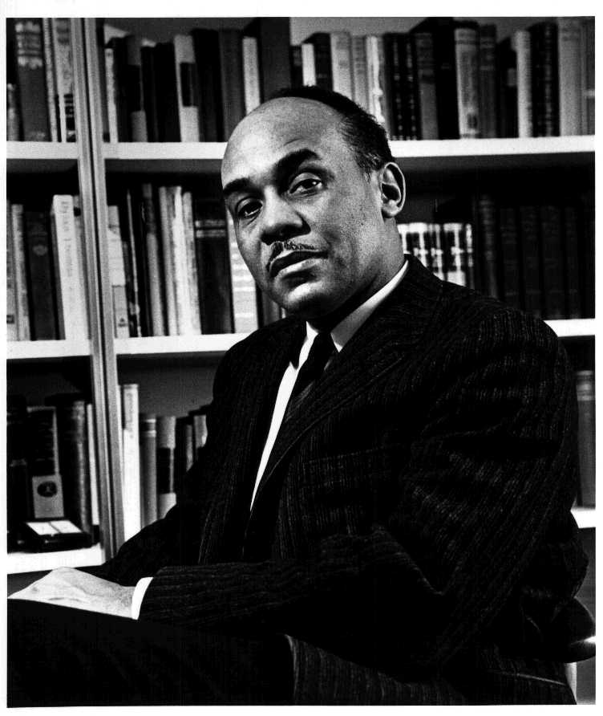

.Ralph Ellison [1914-1994]
Ông viết một cuốn tiểu thuyết xuất bản vào năm 1952 và từ đó được tôn vinh như là một trong những nhà văn khổng lồ của văn học Mỹ thế kỷ XX.
Nhà văn đó là Ralph Ellison [1914-1994] và tác phẩm là Invisible Man (Người vô hình) một tường thuật tái tê về đời sống người da đen ở Mỹ và luôn luôn được tái bản.
Nhà văn đã 80 tuổi này qua đời tại ngôi nhà riêng trong khu Harlem ở New York, vì bệnh ung thư mật. Joe Fox, người biên tập tác phẩm ông của nhà xuất bản Random House đã thốt lên: “Cái chết của ông là điều thương tiếc vô vàn. Ông là một nhà văn lớn và một nhân cách lớn, có một tác phẩm lớn lao về bản thân mình”.
Những dòng đầu tiên Người vô hình được coi là đoạn văn vào loại hay nhất trong văn học Mỹ - Tạm dịch:
“Tôi là một con người vô hình. Không, tôi không phải là một hồn ma giống như những hồn ma đã ám ảnh Edgar Allan Poe, mà cũng chẳng phải là một trong những ngoại chất của các bộ phim Hollywood của các anh. Tôi là một con người bằng thịt bằng xương, có những thớ thịt và những chất lỏng - và người ta bảo tôi còn có một tâm hồn. Tôi là kẻ vô hình, bạn hiểu không, chỉ vì người ta không chịu nhìn tôi”.
Cái hoán dụ mà Ellison dùng để chỉ cái nước Mỹ da đen là vô hình đối với nước Mỹ da trắng đã chạm đúng tim đen của hàng triệu độc giả thuộc mọi màu da và ngôn ngữ. Tác phẩm của ông đã được xuất bản hầu như bằng mọi thứ tiếng ở châu Âu, cả tiếng Do Thái và tiếng Nhật. Nó đoạt giải thưởng Sách Quốc gia và được giới phê bình văn học ca ngợi, trong đó có nhà văn William Faulkner, người được tặng giải Nobel văn học.
Cuốn sách kể về một người kể chuyện da đen vô danh từ miền Nam nước Mỹ đến Harlem cư ngụ, tham gia cuộc chiến đấu chống lại áp bức (được tượng trưng bởi công ty độc quyền về điện và ánh sáng) và cuối cùng lại bị những bạn hữu da đen bỏ rơi.
Các nhà phê bình tỏ ra rất thích thú bởi các thủ pháp “tình tiết nằm trong tình tiết” của ông và sự kết hợp giữa những đột phá văn học của T.S.Eliot và James Joyce với những bài thánh ca da đen, những ca khúc blue và Jazz.
Cuốn khảo luận về Các nhà văn lớn thế kỷ XX nói về cuốn sách này: Người vô hình cũng bị ám ảnh bởi lời hát của Louis Armstrong: “Tôi đã làm gì để rồi lại đen và chán chường đến vậy”, cũng như bị ám ảnh bởi những cảnh đấu bò tót của Hemingway và vẻ uyển chuyển của các dũng sĩ đấu bò của ông trước sức ép.
Việc gắn liền những yếu tố văn hóa không dính dáng đến nhau này là cái cho phép Người vô hình vẽ ra khuôn mặt nội tâm, là cái cách thoát ra khỏi mảnh đất hoang vu của mình.
Năm 1982, nhà văn Ellison đã phát biểu với tờ Thời báo Nữu Ước trong một cuộc phỏng vấn: “Người Mỹ không sáng tạo ra tiểu thuyết. Người da đen không sáng tạo ra thơ ca. Người ta đã viết quá nhiều về bản sắc chủng tộc thay vì loại văn chương nào được sản sinh ra - Văn học vốn mù đối với màu da”.
Sinh ngày 1-3-1914 tại thành phố Oklahoma, Ralph Waldo Ellison đã đặt tên mình theo tên triết gia thế kỷ XIX Ralph Waldo Emerson. Ông được người mẹ nuôi dưỡng từ tuổi lên ba sau khi người cha, một công nhân xây dựng, qua đời.
Trong các khảo luận và phỏng vấn, Ellison miêu tả thời kỳ khôn lớn ở Oklahoma có phần ít tệ phân biệt sắc tộc hơn là những gì ông chứng kiến trong cuộc đời sau này. Ông cũng thích nói đến chuyện thành phố buộc phải lập ra một thư viện cho người da đen như thế nào khi một giáo sĩ da đen tìm cách sử dụng ngôi thư viện chính nhưng lúc bấy giờ được tách riêng ra. Kết quả là các quan chức thành phố đã ném hàng chồng sách vào một chiếc phòng chơi pun (giống như chơi bi-a) và chàng Ellison đã tha hồ ngốn những tác phẩm lớn trên thế giới.
Ông đã theo học 3 năm về cách viết văn cổ điển tại Viện Tuskegee của Alabama và sau đó đến Nữu Ước và trở thành nhà văn dưới sự dẫn dắt của Richard Wright, nhà văn da đen tiếng tăm nhất thời đó.
Ellison đã là chú phụ rể tại đám cưới của Wright năm 1939 và nhà văn này đã xuất bản những tác phẩm đầu tay của Ellison trong một tạp chí mà ông làm chủ bút. Trong đại chiến II, Ellison phục vụ trong đội tàu buôn và khi trở về sẵn sàng viết một cuốn truyện về một lính Mỹ da đen bị quân Đức bắt giữ.
Nhưng điều xảy đến, theo ông nói, lại là việc ông cứ nghĩ mãi về câu này: “Tôi là một kẻ vô hình”. Và cuốn sách đó phải bỏ ra bảy năm để hoàn thành.
Thiên tiểu thuyết thứ hai mà cho đến nay vẫn chưa xuất bản đã trở thành một vấn đề đầy tính huyền bí và suy đoán - Ellison đã viết xong phần khá lớn thiên truyện khi bản thảo bị hủy trong một vụ hỏa hoạn tại nhà nghỉ mát riêng ở dãy núi Bershire năm 1967.
Ông cố gắng viết lại tác phẩm đó và khi thôi dạy đại học năm 1980, ông đã cho in một số trích đoạn trên các tạp chí văn học. Một phần tình tiết của tác phẩm chưa xuất bản nói về một người đàn ông có nước da hơi ngăm đen đã mạo nhận là một kẻ da trắng phân biệt chủng tộc.
Nhiều người phân vân rằng liệu ông có bị ngăn cản khi viết lách không, nhưng ông đã nói với tờ Thời báo Nữu Ước: “Nếu thế, thật là chuyện lạ vì tôi lúc nào cũng viết cả - Sự ngăn cản chính là việc tôi rất thận trọng về những gì tôi mang ra để in”. Mặc dầu ông đã không xuất bản cuốn truyện thứ hai, nhưng đã cho in hai tập khảo luận: Bóng tối và hành động (1964) và Đến vùng Quản Hạt (1986).